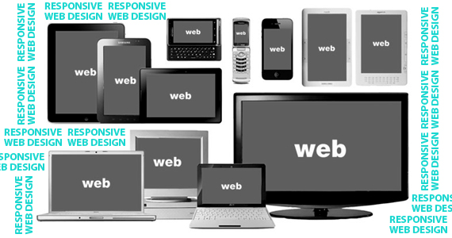
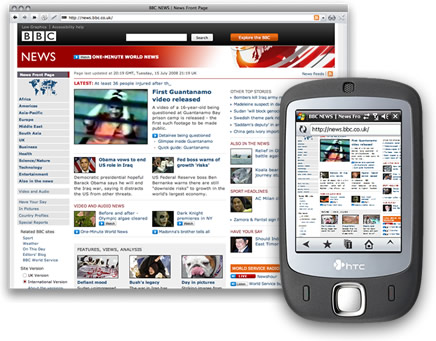
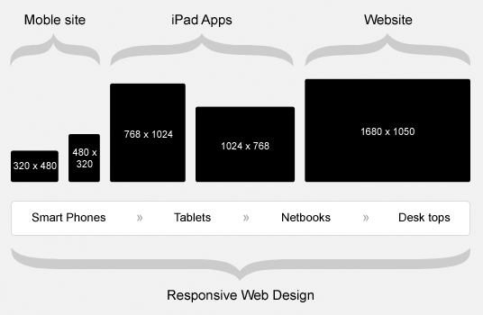
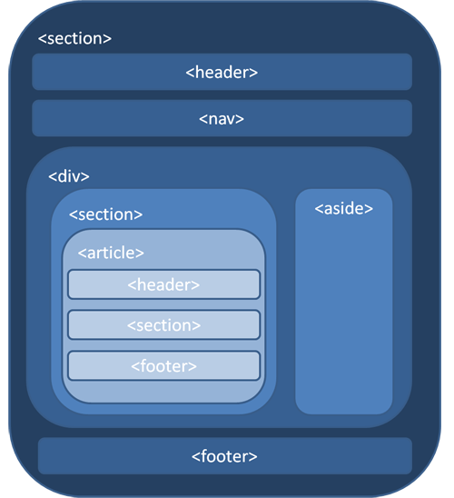
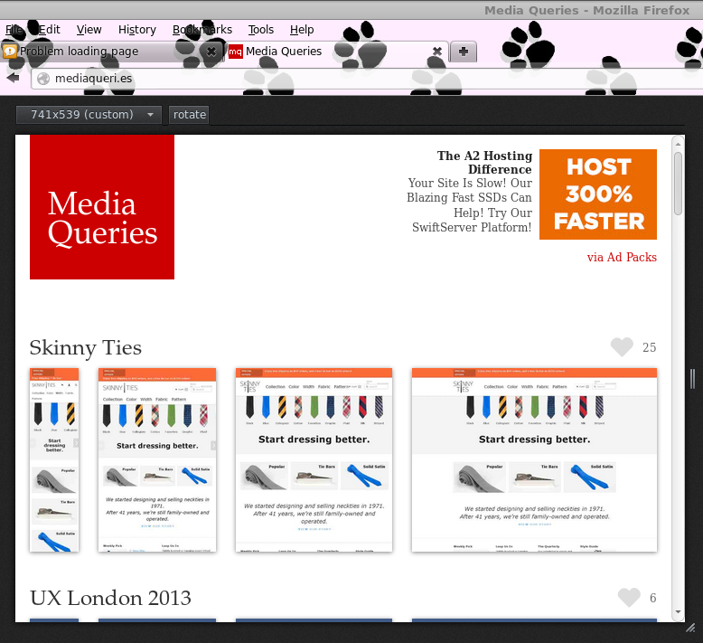
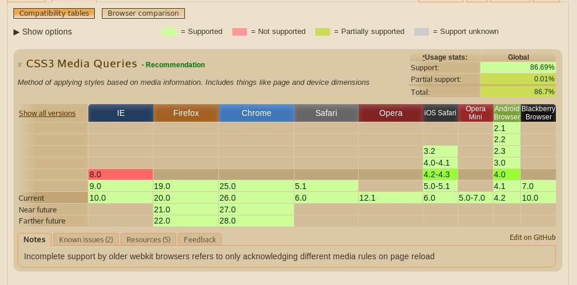

Responsive Web Design
Presented by Manel Rhaiem / @manelbutterfly
Petit Historique..!
Avant
Maintenant
tout les clients demande un site Internet avec une version mobile de celui-ci

Qui a populariser cette
idée
le developpeur Ethan Marcotte
L'objectif
un même site doit pouvoir s’adapter lui-même aux différentes résolutions d’écrans
Les bases
Pour que votre site soit fléxible
La mise en page
Découpez en HTML5
La media querie
Il s'agit d'un mechanisme de selection de feuilles de styles en fonction des caractéristiques d'un média donné.
Les images
s'étirent se redimensionnent ou se disparaissent
la typographies
privilégier les unités % et em
La couche Javascript
- une navigation originale avec javascript
- le code soit flexible à l'adaptation
- Utilisez Jquery mobile
- laissez tomber ces fonctionnalité
Le poids
- Débit
- Supprimez les scripts et media inutile
- Créer des images alternative
PLus technique maintenant
Pré-requis

Intégration
Media Query en HTML
Media Query avec @import
@import url(exemple.css) screen and (max-width:1024px)
Media Query dans une feuille de styles
@media screen and (max-width:1024px){/*les différents styles....*/}
mais généralement il est préférable de tabler sur 3 séries à l'aide des medias queries
/*1- pour les tablettes en mode portrait ou
les ordinateurs avec une résolution
horizontle de moins de 994px */
@media only screen and (min-device-width:786px)
and (orientation: portrait), screen and (max-width:994px)
{/* les différents style */}
/*2- pour les ordinateurs avec une résolution horizontale de moins de 555px
et la plupart des smartphones en mode paysage(480px de large)*/
@media screen and (max-width:55px), screen and (max-device-width:480px)
{/* les différents style */}
/*3- tous les autres appareils avec moins de 320px
de large (principalement les smartphones en mode portrait)*/
@media screen and (max-width:320px)
{/*les différents styles */}
le viewport meta tag
<meta name="wiewport" content="width=device-width, initial-scale=1.0, maximum-scale=1.0">
Exemple
Principes de conception
adaptive
Les Bibliothéques
de Composant
- Les Framework CSS
- Les composants de Gaïa